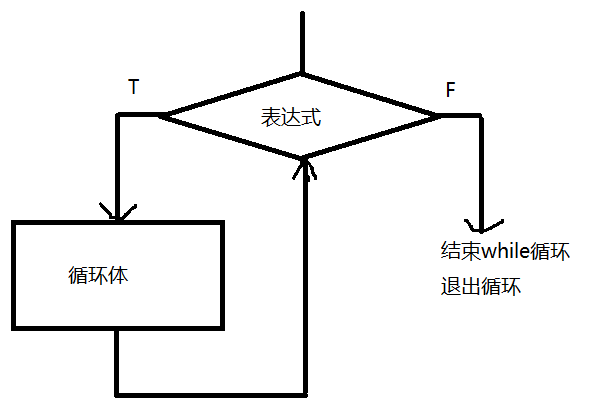

复习：
1、变量的定义 ：
显式定义 ： var age = 18;
隐式定义 ： stuName = “小明”
2、标识符命名规范 ：
字母 数字 下划线 $
不能数字开头
不能使用系统执行的关键字 var function
3、数据类型
基本 数值number 字符string 布尔boolean （true false）
复合数据类型 对象 object
特殊类型 undefined null
4、测试变量类型 ： typeof ： number string object boolean function undefined
5、字面量 ： 常量 数值 字符
6、运算符和表达式
表达式 ： 可以是通过运算符连接的式子 3+4
也可以是一个变量 num
也可以是一个常量 34 true
算术运算符 ：
双目 ： + - * / %
+ : 连接 运算 连接优先 alert("这两个数的和是：" + ( 3+5 ) );
- / * % ： 自动转换（纯数字字符串） 能否正常计算（非数字字符串参与运算 不能正常转换 结果NaN ）
% : 解决是否整除的问题 num%3==0 !(num%3)
单目 ：
++ --
自增 自减
var i = 9;
j = (i++)
j = (++i)
相同点： 变量i都会自增1
不同点： 表达式的结果不同 (结果由自增变量i的值决定)
如果++在后， 先将i的值赋值给整个表达式 j = 9 然后i再自增1 i = 10 先赋值 后自增
如果++在前 先将i的值 自增1 i = 10 然后再将i的值赋值给表达式j j = 10 先自增 后赋值
关系 ： > >= < <= ==只比较值 != ===先比较类型 再比较结果值 !==
关系表达式结果是布尔值 （布尔环境）
逻辑 ：
true && true --- true
false || false --- false
! true --- false isNaN( "hello" ) 判断非数字
闰年条件 ： y%4==0 && y%100!=0 || y %400==0
!(y%4) && y%100 || !(y %400)
条件 ： ？ ：
4>5 ? 45 : 56
赋值 = i = 90 sum += 9 sum = sum + 9
短路 ： true || 不执行 false && 不执行
类型转换 ： 自动转换 ： 算术运算 和 关系运算 --- 纯数字字符串自动转成数值 true ---1 false --- 0 undefined --- NaN null---0
选择结构控制语句 出口只有一个 ：
单分支 ：
if( 表达式 ){ 布尔环境
语句
}else{
语句
}
说明 ： 表达式通常为条件表达式
else 可以省略
布尔环境下：
非0为真 0 为假
字符串为真 "" 为假
所有对象为真
所有函数为真
null 和 undefined 为false
嵌套 ：
if( sex == "男" ){ // sex == "boy" && age > 18
if( age > 18 ){
alert(当兵)
}
}
多分支 ：num = 10
if( num > 6 ){
num = num + 10
}else if( num > 7 ){
num += 10
}else if( num > 8 ){
num += 10
}
switch( 表达式 ){
case 常量表达式1 : 语句 ;
case 常量表达式2 : 语句 ;
default : 语句n;
}
switch执行逻辑：
根据表达式的结果 和 case 后面的常量表达式做比较 ，如果有相等的case ，就执行对应的case语句
switch 表达式值 === case 常量表达式值
编辑器Hbuilder常用的快捷键 ：
光标在任意一行 ： ctrl + c 复制一行 ctrl+x 剪切一行 ctrl +v 粘贴一整行
删除一行 ： ctrl + d
上移下移 ： ctrl + 上箭头 ctrl + 下箭头
注释 ： 单行注释或取消 -- ctrl + / 多行注释或取消 ： ctrl + shift + /
选中多个同样的字符 ： ctrl + shift + a
选中一行 ： tab键 缩进 一个tab空白
shift + tab 返回缩进tab空白
1、循环结构
循环 ：反复执行的代码 ， 这段反复执行的代码只需要编写一次
循环结构控制语句 ：
while
do...while
for
for..in
while 结构控制语句：
while(表达式){
循环体;
}
说明 ：
表达式一般为条件表达式
表达式也可以为 数值 、字符 、 对象、函数
循环体如果有一条语句 花括号 可以省略 ，如果循环由多条语句组成，花括号不能省略
while循环语句执行逻辑 ：

首先判断表达式是否为真，如果为真，进入循环体，然后继续判断表达式是否为真，直到表达式为假 退出循环体
循环的要素 ：
1、有一个循环变量
2、循环变量要有一个初始值
3、循环变量的终值 （循环条件--条件表达式）
4、循环变量的增值（步长）
5、循环体 （反复执行的代码）
2、do...while
语法结构：
do{
循环体;
}while(表达式)
执行逻辑 ：

先执行一次循环体，在判断表达式是否成立，如果成立，继续执行循环体，直到表达式不成立 结束循环
while 和 do..while的区别：
while 循环体可以一次也不执行 先判断 后执行
do..while 循环体 至少要执行一次 先执行 后判断
3、for循环
语法结构：
for( 表达式1;表达式2;表达式3 ){
循环体;
}
说明：
表达式1通常是 为循环变量赋初始值
表达式2 一般是 循环变量终值（循环条件）
表达式3 一般是 循环变量的增值（步长）
执行逻辑 ： 同 while
先执行表达式1 ， 在执行表达式2，如果表达式2成立 执行循环体，然后在执行表达式3，再去判断表达式2，直到表达式2不成立退出循环体 （for 的循环体可以一次也不执行，同while）
循环题目 ：
输出问题 （循环体中直接输出）
求和问题 （结果在循环体外部输出）
计数问题 （求个数）
每几个数换行
图形题
关于for表达式的几点说明 ：
1、表达式1 可以提升到for的上面
2、表达式3 可以写到循环体内
3、表达式2 不能省略不写，否则就会出现死循环
死循环： 无限循环 条件永远成立
while(10){
}
do{
}while(10)
for( ; 10 ; ){
}
4、break 和 continue
continue ：只能用在 循环中 含义 ： 结束本次循环，继续下一次循环
break ：
用于switch语句中 表示中断
用于循环中 ，表示 结束本层循环